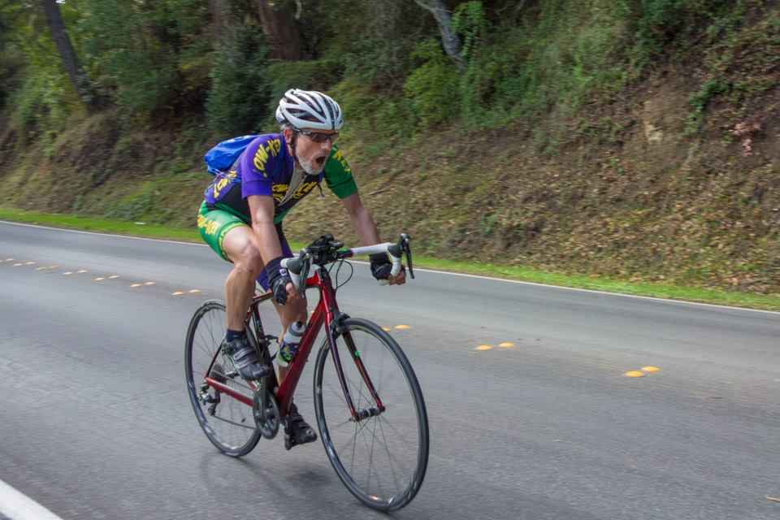

Low-Key Hillclimbs Aggregate Results:
Pescadero Climbs CCW
generated Fri Nov 4 10:34:15 PDT 2016
|
|  |
| 2016 week 5: Frank Paysen leaves it all on the road at the top of Haskins (Bill Bushnell) |
Results are listed here from the Low-Key archives, sorted by time for each climb. Some years start and/or finish time differ slightly, such as
with Kings Mt Road where after 1995 the start moved from Entrance Way to Greer.
Results are ranked by time first, score second.
Score is calculated using a simple percent-of-median-speed
formula, with time adjustments for division. These scores will generally differ from those calculated in the results for that particular year, since
the scoring scheme has evolved. Tandems are split between 1998, when they were counted as single participants, and other years, when the individual
riders have been counted separately
Results for Men
| rank | time | score | rider | cat | team | year | week | code |
|---|
| 1 | 20:36 | 120.543 | David Collet | 45+ | Easy Riders | 2016 | 5 | |
| 2 | 20:39 | 120.275 | Chris Evans | 1 | Easy Riders | 2016 | 5 | |
| 3 | 21:23 | 116.135 | Kirk Scheibelhut | 25+ | Easy Riders | 2016 | 5 | |
| 4 | 21:29 | 115.597 | Bill Laddish | 45+ | Team CVC | 2016 | 5 | |
| 5 | 21:36 | 114.968 | Stefano Profumo | 35+ Cat 1 | Lange Twins | 2016 | 5 | |
| 6 | 22:07 | 112.258 | Paul Castonguay | 50+ | Team DNA | 2016 | 5 | |
| 7 | 22:32 | 110.168 | Dave Cherne | 50+ | San Jose Bike Club | 2016 | 5 | |
| 8 | 22:34 | 110.060 | Robert Easley | 50+ | Sr's & Mr's of No Mercy | 2016 | 5 | |
| 9 | 23:13 | 106.982 | Michael Busha | 35+ | Diablo | 2016 | 5 | |
| 10 | 23:17 | 106.685 | Ryan Jones | 2 | Team CVC | 2016 | 5 | |
| 11 | 23:41 | 104.853 | Martin Schubert | Tired | Google | 2016 | 5 | |
| 12 | 24:02 | 103.324 | Bruce Pauly | 55+ | Sr's & Mr's of No Mercy | 2016 | 5 | |
| 13 | 24:25 | 101.668 | Brian Schuster | 2 | Easy Riders | 2016 | 5 | |
| 14 | 24:28 | 101.483 | Shai Simchi | 40+ | Diablo | 2016 | 5 | |
| 15 | 24:39 | 100.752 | Lucas Pereira | 35+ | Google | 2016 | 5 | |
| 16 | 24:54 | 99.734 | Joseph Fong | 4 | Team CVC | 2016 | 5 | |
| 17 | 25:32 | 97.232 | Bruno Acklin | 55+ | Clagnuts | 2016 | 5 | |
| 18 | 25:44 | 96.485 | Dave Miller | Elite 4 | Stanford Cycling | 2016 | 5 | |
| 19 | 26:00 | 95.491 | Bruce Gardner | Men's 45+ | Sr's & Mr's of No Mercy | 2016 | 5 | |
| 20 | 26:15 | 94.571 | Frank Paysen | 55+ | Diablo | 2016 | 5 | |
| 21 | 26:31 | 93.659 | Andrew Crews | 45+ | Diablo | 2016 | 5 | |
| 22 | 26:34 | 93.491 | Shai Traister | 10+ | easy going | 2016 | 5 | |
| 23 | 26:42 | 93.022 | Dai Sieh | Second Wind | Clagnuts | 2016 | 5 | |
| 24 | 26:59 | 92.038 | Paul McKenzie | 60+ | Sr's & Mr's of No Mercy | 2016 | 5 | |
| 25 | 27:12 | 91.289 | Paul Chuck | Tandem | Sr's & Mr's of No Mercy | 2016 | 5 | |
| 26 | 27:47 | 89.383 | Ramon Periquet | Getting Old Guy | Team CVC | 2016 | 5 | |
| 27 | 28:15 | 87.901 | Nigel Allen | 40+ | Oso | 2016 | 5 | |
| 28 | 29:49 | 83.276 | Giles Douglas | 3 | Google | 2016 | 5 | |
| 29 | 29:51 | 83.212 | Dan Brehmer | 50+ | San Jose Bike Club | 2016 | 5 | |
| 30 | 30:30 | 81.444 | Adem Rudin | 100% To The Top | Race to Space | 2016 | 5 | |
| 31 | 31:27 | 78.970 | David Towey | Type 1.5 Fun | Race to Space | 2016 | 5 | |
| 32 | 36:57 | 67.227 | Ray Smith | Route Guide | Team CVC | 2016 | 5 | |
| 33 | 42:34 | 58.349 | Richard Contreras | 55+ | rhus | 2016 | 5 | |
Results for Hybrid Electric
| rank | time | score | rider | cat | team | year | week | code |
|---|
| 1 | 14:23 | 100.267 | Bill Bushnell | | Low-Key | 2016 | 5 | |
Results for Women
| rank | time | score | rider | cat | team | year | week | code |
|---|
| 1 | 24:17 | 123.389 | Katie Quinn | 30- | Easy Riders | 2016 | 5 | |
| 2 | 26:16 | 114.007 | Shaena Berlin | 2 | Easy Riders | 2016 | 5 | |
| 3 | 27:02 | 110.811 | Janet Martinez/Gardner | 45+ | Sr's & Mr's of No Mercy | 2016 | 5 | |
| 4 | 28:37 | 104.688 | Eleanor Wiseman | | Easy Riders | 2016 | 5 | |
| 5 | 31:26 | 95.312 | Anna Janas | First Time On Mine Road! | Stanford Cycling | 2016 | 5 | |
| 6 | 37:38 | 79.603 | Roya Mirhosseini | 4 | First timer | 2016 | 5 | |